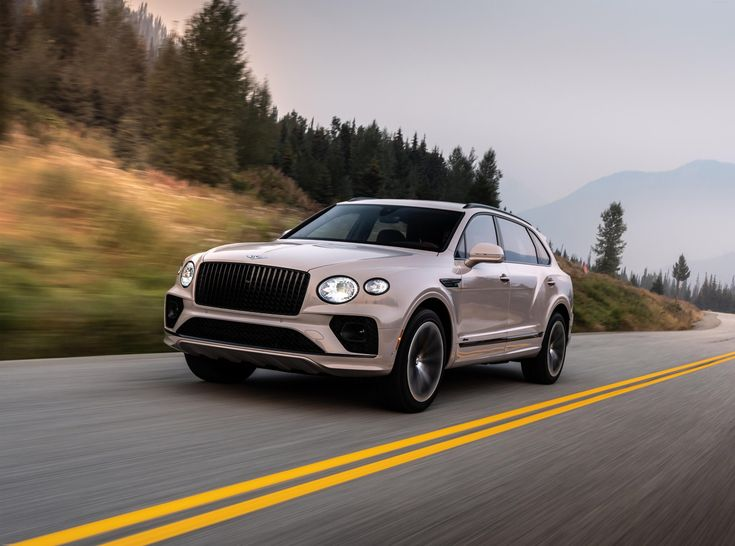

Bentley – Luxus und Leistung seit 1919
Bentley wurde 1919 von Walter Owen Bentley (bekannt als W.O.) gegründet.
Sein Ziel war es, "ein schnelles Auto, ein gutes Auto, das beste Auto
seiner Klasse zu bauen". Dieser Leitspruch gilt noch heute.
Der erste Bentley, der EXP 1, wurde 1919 in London gebaut. Seitdem steht
Bentley für luxuriöse und leistungsstarke Fahrzeuge.

Ein klassischer Bentley
Einige interessante Fakten über Bentley:
-
Bentley hat eine lange Geschichte im Motorsport und gewann mehrfach das
24-Stunden-Rennen von Le Mans.
-
Die berühmten "Winged B"-Embleme sind ein Symbol für Luxus und Eleganz.
-
Bentley ist bekannt für seine handgefertigten Innenräume und die
Verwendung hochwertiger Materialien.
-
Heute gehört Bentley zum Volkswagen-Konzern, bleibt aber eine
eigenständige Marke.
Geschichte und Gründung
- Bentley wurde 1919 von Walter Owen Bentley gegründet.
-
Sein Ziel war es, es schnelle, hochwertige und erstklassige Autos zu
bauen.
- Der erste Bentley, der EXP 1, wurde 1919 in London hergestellt.
-
Bentley hat eine reiche Geschichte im Motorsport und mehrfach das
24-Stunden-Rennen von Le Mans gewonnen.
Drei Beispiel Modelle von der Automarke Bentley

-
2001 Bentley Arnage Le Mans Series
-
Sonderausgabe:
-
Gebaut, um Bentley Renncomeback zu feiern.
-
Sowohl Arnage als auch Continental R gab es als Le Mans
Edition.
-
Besonderes Aussehen:
-
Breitere Radkäste, spiezielle Räder, rote Bremsen,
Sportauspuff.
-
Le Mans Series-Logos.
-
Starker Motor:
-
6,75-Liter-V8-Doppelturbo.
-
Selten:
-
Limitierte Auflage, daher besonders wertvoll.
-
Rennbezug:
-
Erinnerung an Bentleys Rückkehr nach Le Mans.
-
Auf den link finden sie mehr Informationen über den Modell des
Autos.
-
Hier klicken!

-
2023 Bentley Bentayga EWB Azure iUS Version
-
Luxus pur:
-
Dieses Auto ist ein sehr edler Geländewagen (SUV)
-
"EWB" Bedeutet, dass es eine verlängerte Version ist,
also extra viel Platz im Inneren hat.
-
Es ist auf maximalen Komfort ausgelegt, mit hochwertigen Materialien und Technik.
-
Besonderheiten:
-
Viel Beinfreiheit im Fond (hinten).
-
Sehr bequem Sitze.
-
Sanfte, ruhige Fahrt.
-
Die Azure Version ist auf das Wohlbefinden der Insassen ausgelegt.
-
Technik
-
Modernste Technik, inklusive große Bildschirme und Assistenzsysteme.
-
Zielgruppe
-
Ein Auto für Menschen, die sehr viel Wert auf Luxus und Komfort legen.
-
Auf den link finden sie mehr Informationen über den Modell des
Autos.
-
Hier klicken!

-
2007 Bentley Azure
-
Luxus-Cabriolet
-
Der Azure ist ein offener Viersitzer, der füt luxuriöse Fahrten konzipiert ist.
-
Er zeichnet sich durch seine hochwertige Verarbeitung, edle Materialien und sein elegantes Design aus.
-
Motorleistung
-
Ein kraftvoller 6,76-Liter-V8-Motor sorgt für beeindruckende Leistung.
-
Das Auto bietet ein sanftes und kraftvolles Fahrerlebnis.
-
Komfort
-
Der Azure ist auf maximalen Komfort ausgelegt, mit geräumigen Innenraum un luxuriöser Ausstattung.
-
Das elektrische Stoffverdeck ermöglicht offenes Fahrvergnügen.
-
Besonderheiten
-
Er basiert auf der Plattform des Bentley Arnage.
-
Er war eines der teuersten Serien-Cabriolets seiner Zeit.
-
Auf den link finden sie mehr Informationen über den Modell des
Autos.
-
Hier klicken!